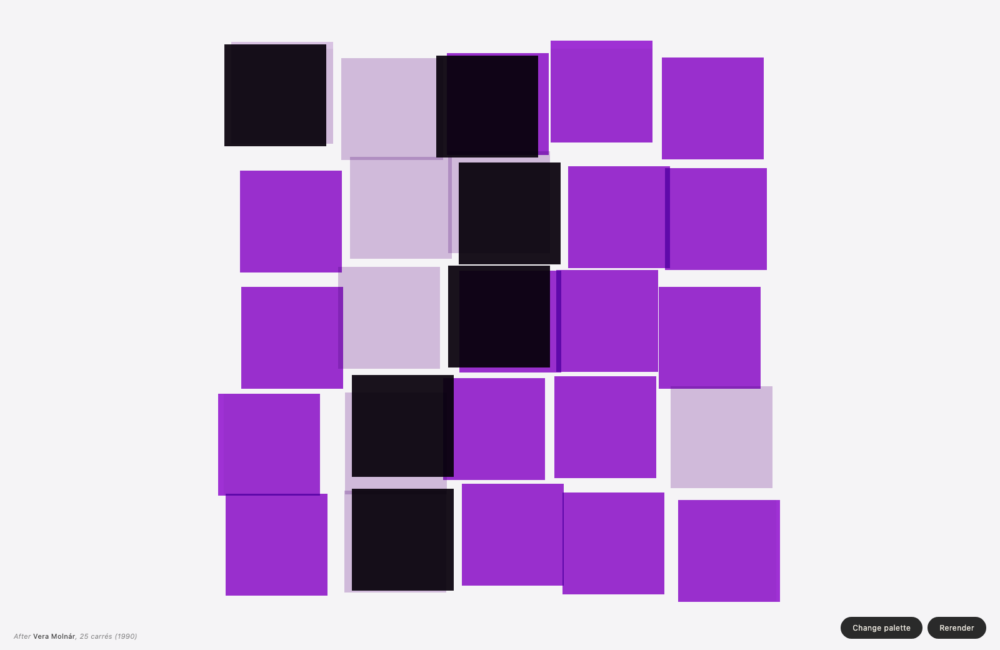

2026_exp/vis · molnar
25 carrés
2026_exp/vis/molnar_25.html
25 carrés — 2026_exp/vis; grouped under Painterly / Hatch / Texture. Signals: dom, molnar, painterly-hatch-texture.
Upgrade notes: Promote stronger artist-palette and hybrid palette behavior; evaluate whether texture forms want their own insert family.